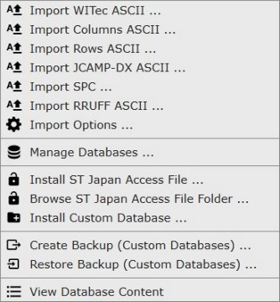
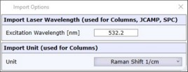

|
TrueMatch菜单
|

导入
导入可用于搜索或添加到您自己数据库中的光谱。
导入WITec ASCII
从一个或多个 WITec ASCII文件 导入光谱。
导入Columns ASCII
从一个或多个包含简单数据列的文件导入光谱。小数分隔符必须为点"."。值分隔符可以是<制表符>或<分号>或<逗号>
XData1 YData1 YData1 [...]
XData2 YData2 YData2 [...]
[...]
导入Rows ASCII
从一个或多个包含简单数据行的文件导入光谱。小数分隔符必须为点"."。值分隔符可以是<制表符>或<分号>或<逗号>
带标题：
<separator>XData1 XData2 [...]
Caption1 YData1 YData [...]
Caption2 YData1 YData [...]
[...]
不带标题：
XData1 XData2 [...]
YData1 YData2 [...]
YData1 YData2 [...]
[...]
导入JCAMP-DX ASCII
从一个或多个JCAMP-DX ASCII文件导入光谱。参见 https://en.wikipedia.org/wiki/JCAMP-DX
导入SPC
从一个或多个SPC二进制文件导入光谱。参见 https://en.wikipedia.org/wiki/SPC_file_format
导入RRUFF ASCII
从一个或多个RRUFF ASCII文件导入光谱。参见 https://rruff.info/
导入选项

激发波长
定义来自"Columns"、"Rows"、"JCAMP"和"SPC"文件的导入数据的激光波长。
单位
定义来自"Columns"和"Rows"的导入数据的X值单位。
管理数据库
打开数据库管理器。在此您可以创建或删除自己的数据库，并显示或隐藏ST Japan和WITec演示数据库。
安装ST Japan访问文件
这将安装运行ST Japan数据库所需的ST Japan访问文件。此文件定义哪些ST Japan子数据库已获得许可。此外，必须使用硬件USB加密狗。
参见 ST Japan数据库。
浏览ST Japan访问文件文件夹
打开资源管理器窗口并浏览到ST Japan数据库文件夹。参见 ST Japan数据库。
安装自定义数据库
将.h5数据库文件复制到TrueMatch自定义数据库文件夹中。
创建备份
这将把所有自定义数据库放入一个压缩的ZIP文件中。
恢复备份
这将从压缩的ZIP文件中恢复自定义数据库。如果数据库已存在，系统将询问您。
查看数据库内容
这将打开一个数据库查看器，允许您浏览所有数据库。